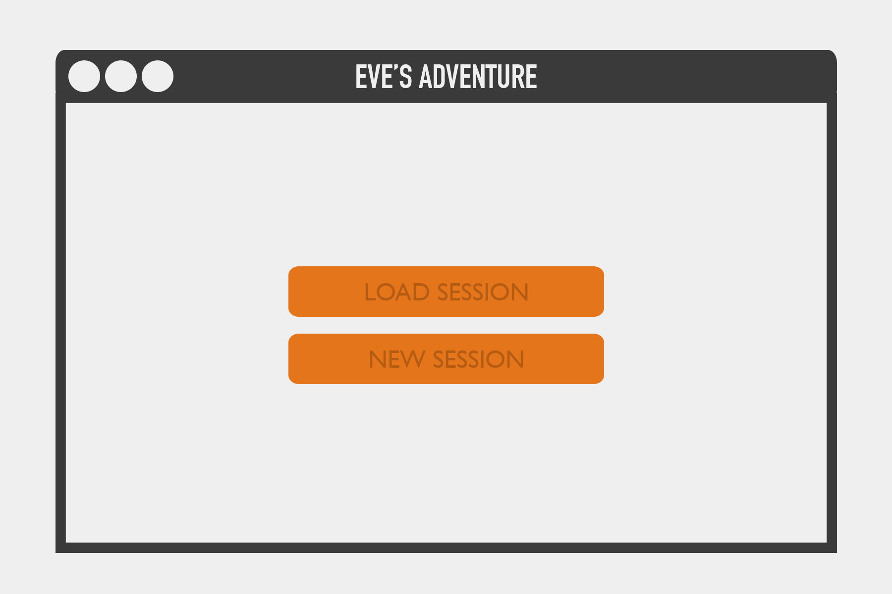
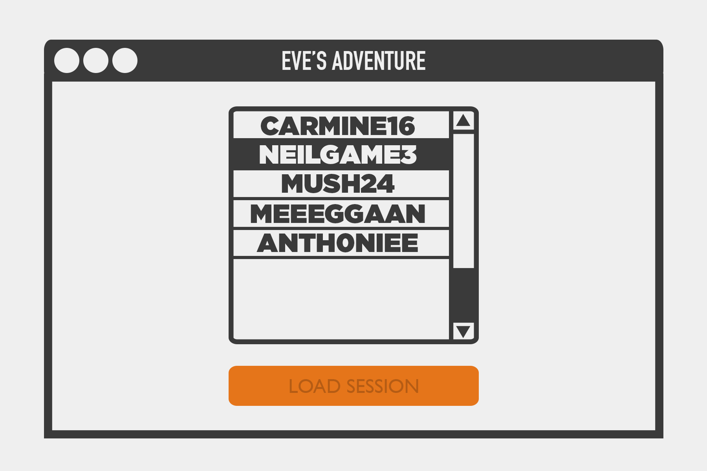
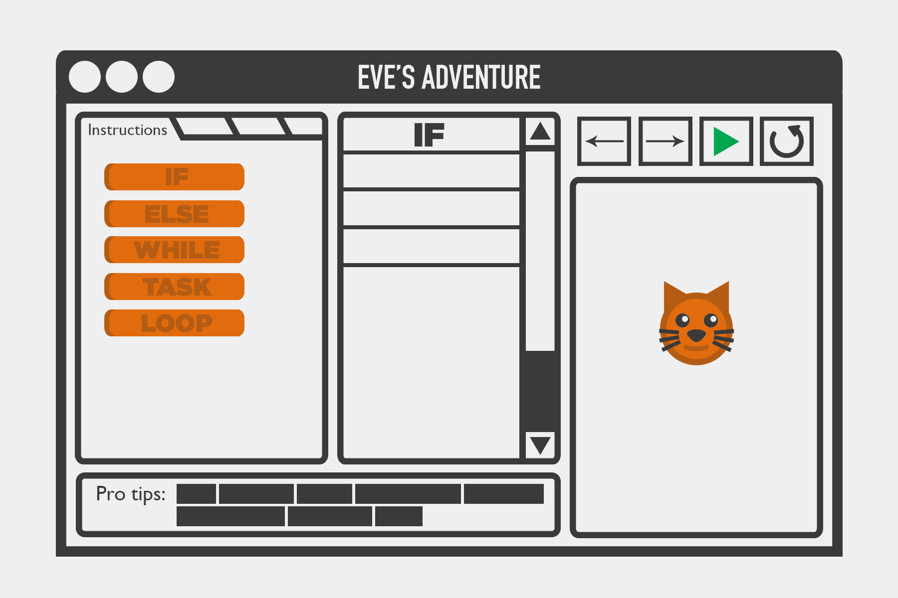
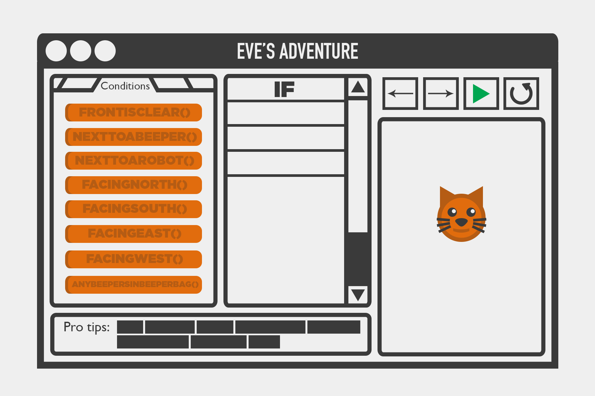
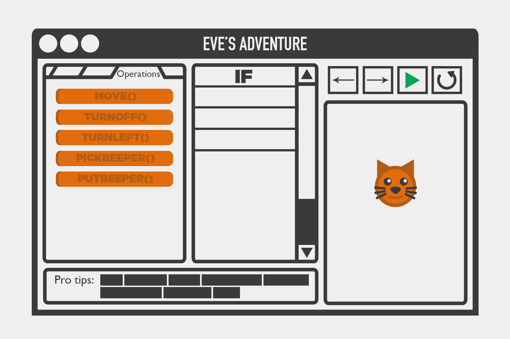
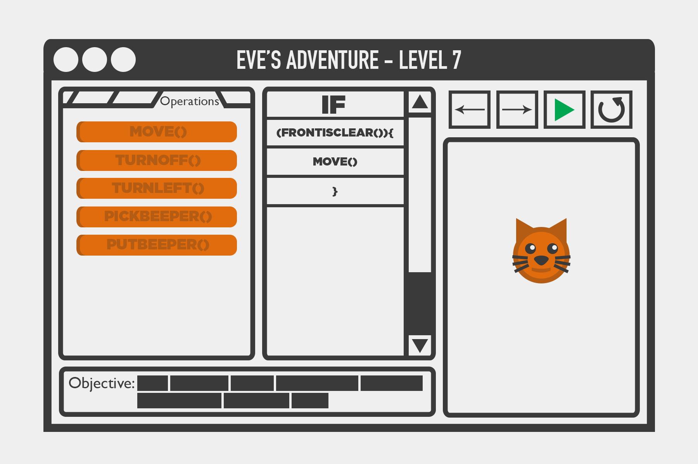

HOME SCREEN
The home screen consists of two simple buttons. One button will lead a user to Sandbox Mode where they would be allowed to play freely. The user can simply build Karel programs and have Eve perform the instructions that the user desires Eve to perform. However, Adventure Mode adds a twist by displaying objectives and goals that the user needs to accomplish in order to get from one level to the next.
LOAD/NEW ADVENTURE SCREEN
After clicking the Adventure Mode button on the home screen, it would lead the user to this screen. On this screen, a user would be able to play a new game or load up an old game. There will be records of previous games that were played stored on the user's local machine.
LOAD GAME SCREEN
There will be records of previous games that were played stored on the user's local machine. Each "game" will simply have information on the last level it had completed stored in a file.
SANDBOX MODE
Here, a user would be able to build Karel programs by clicking on the JButtons in the panel to the left. When the user clicks on a JButton, that command/term would be added to the JList in the middle panel. The middle panel is where the program is "written" so to speak. The left panel will have JTabbedPanes to allow 3-4 tabs of information. These tabs will be sorted by the commands/content within each pane. The Instructions pane will have 5 JButtons (If, else, while, task, loop). When a user hovers over a JButton, there will be a couple tips regarding what that specific command/term does down below in the Pro Tips Panel (bottom left).
SANDBOX MODE (Continued)
Second tab reveals all the conditions a user can implement in their program.
SANDBOX MODE (Continued)
Third tab reveals all the operations a user can implement in their program.
GAME MODE
Very similar to Sandbox Mode except it adds objectives for the user to complete. Objectives would be displayed in the same box as the pro tips. Whenever the user's mouse hovers over a Jbutton in the left panel, the pro tip will replace the objective. Otherwise, the objective will be staticly displayed in the bottom left panel. Each time a user completes an objective, they move on to the next level where a new objective is provided.